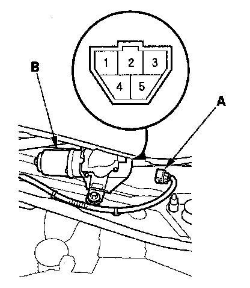
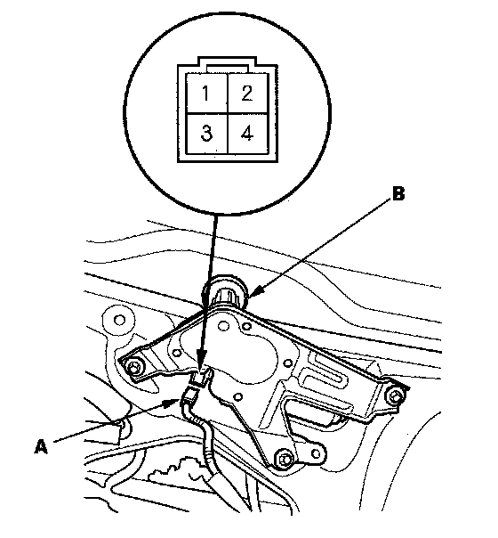

Wiper Motor Test
Wiper Motor TestWindshield
1. Open the hood, and remove the wiper arms.
NOTE: Carefully remove the wiper arms so that they do not touch the hood.
2. Remove the cowl covers.

3. Disconnect the 5P connector (A) from the windshield wiper motor (B).
4. Test the motor by connecting battery power to the windshield wiper motor 5P connector No. 3 terminal and ground to the No. 2 terminal. The motor should run at low speed. If the motor does not run or fails to run smoothly, replace the motor.
5. Test the motor by connecting battery power to the windshield wiper motor 5P connector No. 5 terminal and ground to the No. 2 terminal. The motor should run at high speed. If the motor does not run or fails to run smoothly, replace the motor.
6. Connect an analog ohmmeter between the windshield wiper motor 5P connector No. 1 and No. 4 terminals, and run the motor at low or high speed. The ohmmeter should indicate continuity and no continuity alternately. If it does not, replace the motor.
Rear Window
1. Open the tailgate, and remove the tailgate lower panel.

2. Disconnect the 4P connector (A) from the rear window wiper motor (B).
3. Test the motor by connecting battery power to the rear window wiper motor 4P connector No. 1 terminal and ground to the No. 2 terminal. The motor should run. If the motor does not run or fails to run smoothly, replace the motor.
4. Connect an analog ohmmeter between the rear window wiper motor 4P connector No. 2 and No. 3 terminals. The ohmmeter should indicate continuity and no continuity alternately. If it does not, replace the motor.